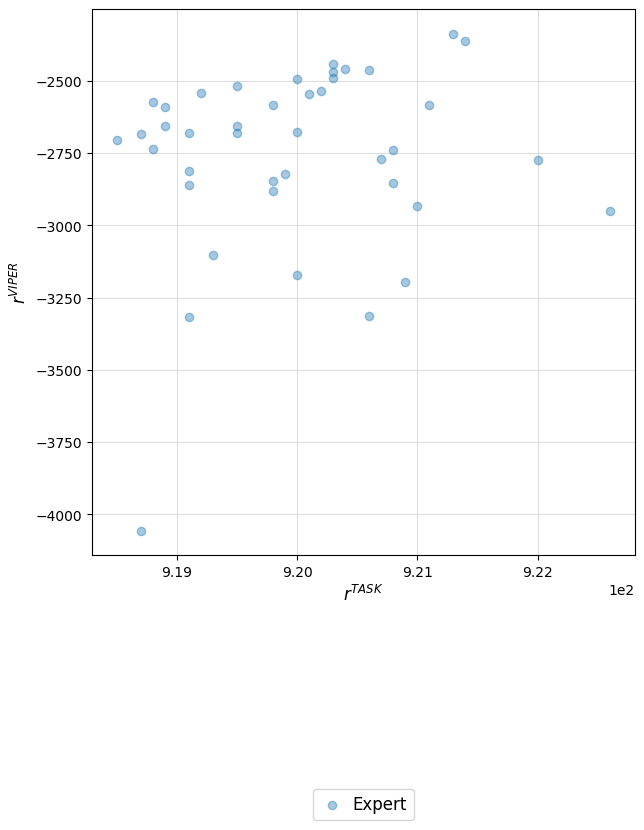

! wget -O checkpoint_dmc.sh https://raw.githubusercontent.com/Alescontrela/viper_rl/refs/heads/main/viper_rl_data/download/checkpoint_dmc.sh --quiet
! wget -O dataset_dmc.sh https://raw.githubusercontent.com/Alescontrela/viper_rl/refs/heads/main/viper_rl_data/download/dataset_dmc.sh --quiet
! python3 -m pip install internetarchive -qImitation Learning from Videos - Video Prediction Rewards (VIPER)
Imitation learning from videos is challenging as action labels are often not observed. A (autoregressive) video prediction model can predict the next frame only based on the previous frames (and no explicit actions), i.e., \(p_\theta(x_{t+1} | x_{t-k:t})\).
In this notebook, we aim to show examples of using such video prediction models for reward modelling in the DeepMind Control (DMC) environment. In particular, we consider the method described in this paper, called Video Prediction Rewards (VIPER). The main algorithm is as follows:
Algorithm 1: VIPER
Train video prediction model $ p_{} $ on expert videos.
while not converged do
- Choose action: $ a_t (x_t) $
- Step environment: $ x_{t+1} (a_t) $
- Fill in reward: $ r_t p_{}(x_{t+1} x_{t-k:t}) + r_t^{} $
- Add transition $ (x_t, a_t, r_t, x_{t+1}) $ to replay buffer.
- Train $ $ from replay buffer using any RL algorithm.
Most of this notebook is based on these examples.
Visualizing Video Model Outputs
Rather than training the video prediction model from scratch, we load a model checkpoint trained on the expert videos in the DMC environment.
# Download the dataset
! bash dataset_dmc.shSaving dataset to:
//datasets
dmc_dataset_aa:
downloading dmc.tar.partaa: 100% 1.86G/1.86G [04:33<00:00, 7.32MiB/s]
dmc_dataset_ab:
downloading dmc.tar.partab: 100% 1.86G/1.86G [04:04<00:00, 8.19MiB/s]
dmc_dataset_ac:
downloading dmc.tar.partac: 100% 1.86G/1.86G [03:16<00:00, 10.2MiB/s]
dmc_dataset_ad:
downloading dmc.tar.partad: 100% 1.86G/1.86G [04:56<00:00, 6.75MiB/s]
dmc_dataset_ae:
downloading dmc.tar.partae: 100% 251M/251M [00:28<00:00, 9.17MiB/s]# Download the model checkpoint
! bash checkpoint_dmc.shSaving checkpoint to:
//checkpoints
dmc_checkpoint_aa:
downloading dmc.tar.partaa: 100% 677M/677M [01:18<00:00, 9.02MiB/s]! git clone https://github.com/Alescontrela/viper_rl --quietimport warnings
warnings.filterwarnings("ignore", category=DeprecationWarning)
import os
import sys
os.environ['CUDA_VISIBLE_DEVICES'] = '0'
sys.path.append('viper_rl/viper_rl')
sys.path.append('viper_rl')
import imageio
from IPython.display import Image
import numpy as np
import notebooks.notebook_utils as nbu
from videogpt.reward_models.videogpt_reward_model import VideoGPTRewardModelLet’s first load the video prediction model.
reward_model = VideoGPTRewardModel(
videogpt_path="/checkpoints/dmc_videogpt_l16_s1",
vqgan_path="/checkpoints/dmc_vqgan",
task='dmc_cheetah_run'
)Reward model devices: cuda:0
Available tasks: ['acrobot_swingup', 'cartpole_balance', 'cartpole_swingup', 'cheetah_run', 'cup_catch', 'finger_spin', 'finger_turn_hard', 'hopper_stand', 'manipulator_bring_ball', 'pendulum_swingup', 'pointmass_easy', 'pointmass_hard', 'quadruped_run', 'quadruped_walk', 'reacher_easy']
Loaded conditioning information for task cheetah_run
finished loading VideoGPTRewardModel:
seq_len: 16
class_cond: True
task: cheetah_run
model: videogpt
camera_key: image
seq_len_steps: 16
mask? False
task_id: 3
n_skip? 1Now, we load sample sequences to serve as conditioning frames for the video model.
frames = np.load(open("/datasets/dmc/cheetah_run/test/20230308T073511-2fyNAhVrRMZG0Ej3OsMJNl-len1001-rew918.7.npz", "rb"))["arr_0"]
num_conditioning_frames = 10
init_frames = frames[:num_conditioning_frames][None, ...]# Perform inference with the videogpt model.
frames = reward_model.rollout_video(init_frames, 90, seed=20, pbar=True, open_loop_ctx=num_conditioning_frames // reward_model.n_skip)Latents of shape (16, 16)100%|██████████| 12/12 [00:57<00:00, 4.77s/it]We now visualize the predicted frames as follows:
file = f'/tmp/test.gif'
image_list = [frames[0][j] for j in range(frames.shape[1])]
imageio.mimsave(file, image_list, duration=50, loop=0)
print(f'Saved video to {file}')
display(Image(data=open(file,'rb').read(), format='gif', width=500, height=500))Saved video to /tmp/test.gif<IPython.core.display.Image object>Using Pre-trained Video Models as Reward Functions
Here, we examine VIPER’s effectiveness when used as a reward model. We will analyze the video model’s log-likelihood to determine how correlated it is with the actual reward.
import glob
# directory of expert trajectories
dir_path = "/datasets/dmc/cheetah_run/test/"
trajs = glob.glob(dir_path + "*.npz")
likelihood_rewards = []
# only the first few frames
frame_num = 20
for traj in trajs:
return_val = float(traj.split("rew")[-1].split(".npz")[0])
frames = np.load(open(traj, "rb"))["arr_0"][:frame_num]
seqs = [{"image": frames[i], "is_first": True if i == 0 else False} for i in range(frames.shape[0])]
likelihoods = reward_model(seqs)
likelihood = sum([l["density"].item() for l in likelihoods]) / len(likelihoods)
likelihood_rewards.append((likelihood, return_val))import matplotlib.pyplot as plt
import matplotlib.ticker as ticker
fig, axes = plt.subplots(1, 1, figsize=(7, 7))
if not isinstance(axes, np.ndarray):
axes = np.array([axes])
axes = axes.flatten()
rewards = [x[1] for x in likelihood_rewards]
densities = [x[0] for x in likelihood_rewards]
for ax in axes:
ax.grid(which='both', color='#dddddd')
ax.xaxis.set_minor_locator(ticker.AutoMinorLocator(int(1)))
ax.yaxis.set_minor_locator(ticker.AutoMinorLocator(int(1)))
ax.tick_params(which='minor', length=0)
axes[0].scatter(rewards, densities, label='Expert', alpha=0.4, zorder=1000)
axes[0].set_xlabel(r'$r^{TASK}$', fontsize='large')
axes[0].set_ylabel(r'$r^{VIPER}$', fontsize='large')
options = dict(
fontsize='large', numpoints=1, labelspacing=0, columnspacing=1.2,
handlelength=1.5, handletextpad=0.5, ncol=4, loc='lower center', frameon=True, fancybox=True)
plt.legend(bbox_to_anchor=(0.5, -0.5), **options)
plt.ticklabel_format(axis='both', style='sci', scilimits=(2,4))
# plt.suptitle(f'Reward model: {rm_key}')
plt.subplots_adjust(bottom=0.1)
plt.show()